Java Swing 组件和容器
原文：https://www.studytonight.com/java/java-swing-components.php
一个组件是一个独立的视觉控件，而 Java Swing 框架包含了一大组这样的组件，它们提供了丰富的功能并允许高级定制。它们都是从 JComponent 类派生的。所有这些组件都是轻量级组件。这个类提供了一些常见的功能，比如可插拔的外观、对可访问性的支持、拖放、布局等。
容器容纳一组组件。它提供了一个可以管理和显示组件的空间。容器有两种类型:
顶层容器
它继承了 AWT 的组件和容器。
- 它不能包含在其他容器中。
- 重量级。
示例:JFrame、JDialog、JApplet
Lightweight Containers
- 它继承了 JComponent 类。
- 它是一个通用容器。
- 它可以用来将相关组件组织在一起。
- 示例:JPanel
摇摆 JButton
JButton 类提供了按钮的功能。它用于创建按钮组件。JButton 类有三个构造器，
JButton 的例子
在这个例子中，我们使用 Jbutton 类创建了两个按钮，并将它们添加到 Jframe 容器中。
import javax.swing.*; import java.awt.event.*; import java.awt.*; public class testswing extends JFrame { testswing() { JButton bt1 = new JButton("Yes"); //Creating a Yes Button. JButton bt2 = new JButton("No"); //Creating a No Button. setDefaultCloseOperation(JFrame.EXIT_ON_CLOSE) //setting close operation. setLayout(new FlowLayout()); //setting layout using FlowLayout object setSize(400, 400); //setting size of Jframe add(bt1); //adding Yes button to frame. add(bt2); //adding No button to frame. setVisible(true); } public static void main(String[] args) { new testswing(); } }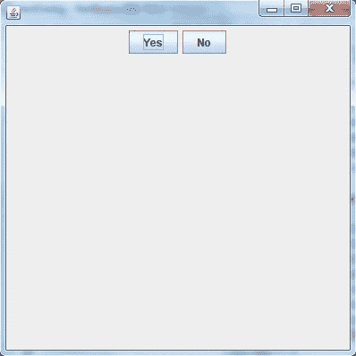
jtextfield(jtextfield)
JTextField 用于输入单行文本。它是使用最广泛的文本组件。它有三个构造器，
**JTextField**(int *cols*) **JTextField**(String *str*, int *cols*) **JTextField**(String *str*)列代表文本字段中的列数。
使用 JTextField 的示例
在这个例子中，我们使用 JtextField 类创建文本字段，并将其添加到 jframe 容器中。
import javax.swing.*; import java.awt.event.*; import java.awt.*; public class MyTextField extends JFrame { public MyTextField() { JTextField jtf = new JTextField(20); //creating JTextField. add(jtf); //adding JTextField to frame. setLayout(new FlowLayout()); setDefaultCloseOperation(JFrame.EXIT_ON_CLOSE); setSize(400, 400); setVisible(true); } public static void main(String[] args) { new MyTextField(); } }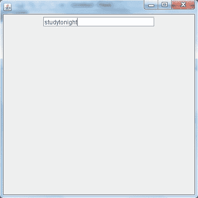
检验盒
JcheckBox 类用于在 swing 框架中创建 checkBox。在这个例子中，我们创建了三个复选框来获得用户响应。
**JCheckBox**(String *str*)using JCheckBox
import javax.swing.*; import java.awt.event.*; import java.awt.*; public class Test extends JFrame { public Test() { JCheckBox jcb = new JCheckBox("yes"); //creating JCheckBox. add(jcb); //adding JCheckBox to frame. jcb = new JCheckBox("no"); //creating JCheckBox. add(jcb); //adding JCheckBox to frame. jcb = new JCheckBox("maybe"); //creating JCheckBox. add(jcb); //adding JCheckBox to frame. setLayout(new FlowLayout()); setDefaultCloseOperation(JFrame.EXIT_ON_CLOSE); setSize(400, 400); setVisible(true); } public static void main(String[] args) { new Test(); } }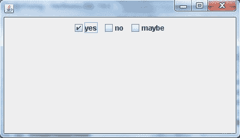
按钮
单选按钮是一组相关按钮，其中只能选择一个。类用于在框架中创建一个单选按钮。下面是 JRadioButton 的构造器，
**JRadioButton**(String *str*)使用 radiobutton 的示例
为了在 swing 中创建单选按钮，我们使用了 jradiobutton 类。它用于一次获得单个用户响应。
import javax.swing.*; import java.awt.event.*; import java.awt.*; public class Test **extends** JFrame { public Test() { **JRadioButton jcb = new JRadioButton("A")**; //creating JRadioButton. add(jcb); //adding JRadioButton to frame. **jcb = new JRadioButton("B")**; //creating JRadioButton. add(jcb); //adding JRadioButton to frame. **jcb = new JRadioButton("C")**; //creating JRadioButton. add(jcb); //adding JRadioButton to frame. **jcb = new JRadioButton("none")**; add(jcb); setLayout(new FlowLayout()); setDefaultCloseOperation(JFrame.EXIT_ON_CLOSE); setSize(400, 400); setVisible(true); } public static void main(String[] args) { new Test(); } }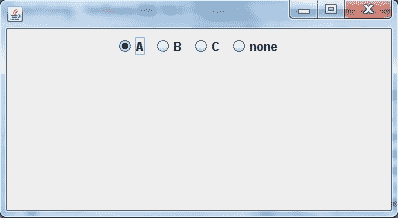
jcombo box-jcombo 方块
组合框是文本字段和下拉列表的组合。 JComboBox 组件用于在 Swing 中创建组合框。下面是 JComboBox 的构造器，
**JComboBox**(String *arr[]*)使用 JComboBox 的示例
让我们创建一个向 jframe 添加 combobox 的示例。组合框用于创建下拉菜单。见下面的例子。
import javax.swing.*; import java.awt.event.*; import java.awt.*; public class Test **extends** JFrame { String **name[]** = {"Abhi","Adam","Alex","Ashkay"}; //list of name. public Test() { **JComboBox jc = new JComboBox(name)**; //initialzing combo box with list of name. add(jc); //adding JComboBox to frame. setLayout(new FlowLayout()); setDefaultCloseOperation(JFrame.EXIT_ON_CLOSE); setSize(400, 400); setVisible(true); } public static void main(String[] args) { new Test(); } }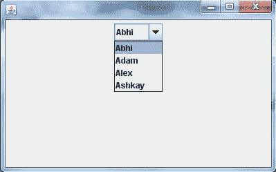
Java 程序：改变框架背景颜色(使用动作事件)
import java.awt.*; //importing awt package import javax.swing.*; //importing swing package import java.awt.event.*; //importing event package //For an event to occur upon clicking the button, ActionListener interface should be implemented class StColor extends JFrame implements ActionListener{ JFrame frame; JPanel panel; JButton b1,b2,b3,b4,b5; StColor(){ frame = new JFrame("COLORS"); frame.setDefaultCloseOperation(JFrame.EXIT_ON_CLOSE); panel = new JPanel(); //Creating a panel which is a container and will hold all the buttons panel.setSize(100, 50); b1 = new JButton("BLUE"); //Creating a button named BLUE b1.addActionListener(this); //Registering the button with the listener b2 = new JButton("RED"); //Creating a button named RED b2.addActionListener(this); //Registering the button with the listener b3 = new JButton("CYAN");//Creating a button named CYAN b3.addActionListener(this);//Registering the button with the listener b4 = new JButton("PINK"); //Creating a button named PINK b4.addActionListener(this); //Registering the button with the listener b5 = new JButton("MAGENTA"); //Creating a button named MAGENTA b5.addActionListener(this); //Registering the button with the listener //Adding buttons to the Panel panel.add(b1); panel.add(b2); panel.add(b3); panel.add(b4); panel.add(b5); frame.getContentPane().add(panel); //adding panel to the frame frame.setSize(500,300); frame.setVisible(true); frame.setLayout(new FlowLayout()); } //The below method is called whenever a button is clicked @Override public void actionPerformed(ActionEvent e) { //This method returns an object of the button on which the Event- Pressing of button initially occurred Object see = e.getSource(); if(see ==(b1)){ //Checking if the object returned is of button1 frame.getContentPane().setBackground(java.awt.Color.blue); //changing the panel color to blue } if(see == b2){ //Checking if the object returned is of button2 frame.getContentPane().setBackground(java.awt.Color.red); //changing the panel color to red } if(see == b3){ //Checking if the object returned is of button3 frame.getContentPane().setBackground(java.awt.Color.cyan);//changing the panel color to cyan } if(see == b4){ //Checking if the object returned is of button4 frame.getContentPane().setBackground(java.awt.Color.pink); //changing the panel color to pink } if(see == b5){ //Checking if the object returned is of button5 frame.getContentPane().setBackground(java.awt.Color.magenta); //changing the panel color to magenta } } } class Test { public static void main(String[] args) { StColor o = new StColor(); } }输出:
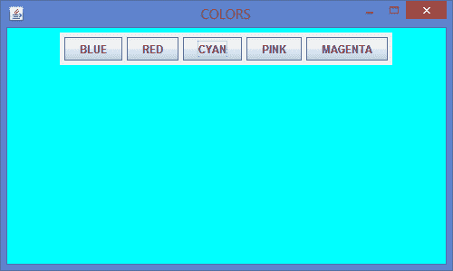
JLabel
在 Java 中，Swingtoolkit 包含一个 JLabel 类。它在 package javax.swing.JLabel 类下。它用于在框中放置文本。只允许单行文本，不能直接更改文本。
申报
公共类 JLabel 扩展了 JComponent 实现了 SwingConstants，可访问
JLabel 包含 4 个构造器。它们如下:
1. JLabel（）
2. JLabel（字符串）
3. JLabel（图标 i）
4.字符串，图标，内部水平对齐
示例:
import javax.swing.*; class SLabelDemo1 { public static void main(String args[]) { JFrame label_f= new JFrame("studytonight ==> Label Demo"); JLabel label_l1,label_l2; label_l1=new JLabel("Welcome to studytonight.com"); label_l1.setBounds(50,50, 200,30); label_l2=new JLabel("How are You?"); label_l2.setBounds(50,100, 200,30); label_f.add(label_l1); label_f.add(label_l2); label_f.setSize(300,300); label_f.setLayout(null); label_f.setVisible(true); } }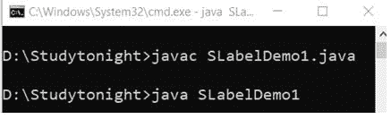 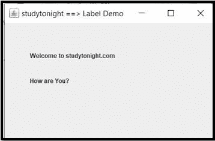
JTextArea(人名)
在 Java 中，Swing 工具包包含一个 JTextArea 类。它在 package javax.swing.JTextArea 类下。它用于显示多行文本。
申报
公共类 JTextArea 扩展了 JTextComponent
JTextArea 包含 4 个构造器。它们如下:
1.JTextArea()
2.字符串区域
3.JTextArea(内部行，内部列)
4.字符串，内部行，内部列
示例:
让我们举个例子来创建文本区域。我们使用 JtextArea 类来创建文本区域并添加到 Jframe 容器中。
import javax.swing.*; public class STextAreaDemo1 { STextAreaDemo1() { JFrame textArea_f= new JFrame(); JTextArea textArea_area=new JTextArea("Welcome to studytonight.com "); textArea_area.setBounds(10,30, 200,200); textArea_f.add(textArea_area); textArea_f.setSize(400,400); textArea_f.setLayout(null); textArea_f.setVisible(true); } public static void main(String args[]) { new STextAreaDemo1(); } }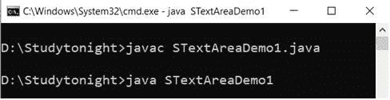
jpassword field(jpassword 字段)
在 Java 中，Swing 工具包包含一个 JPasswordField 类。它在 package javax . swing . jpasswordfield 类下。它专门用于密码，可以编辑。
申报
公共类 JPasswordField 扩展了 JTextField
JPasswordFieldContains 包含 4 个构造器。它们如下:
1.jpasswordfield()
2.JPasswordField(整数列)
3.字符串字段(字符串文本)
4.字符串文本，整型列
示例:
为了生成密码组件，swing 提供了以加密格式接受用户输入的 Jpasswordfield。
import javax.swing.*; public class SPasswordFieldDemo1 { public static void main(String[] args) { JFrame passWord_f=new JFrame("studytonight ==> Password Field Demo"); JPasswordField passWord_value = new JPasswordField(); JLabel passWord_l1=new JLabel("Password "); passWord_l1.setBounds(20,100, 100,30); passWord_value.setBounds(100,100,100,30); passWord_f.add(passWord_value); passWord_f.add(passWord_l1); passWord_f.setSize(300,300); passWord_f.setLayout(null); passWord_f.setVisible(true); } }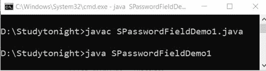
组建
在 Java 中，Swing 工具包包含一个 JTable 类。它在 package javax.swing.JTable 类下。它用于绘制表格来显示数据。
jtable 包含两个构造器。它们如下:
1.JTable()
2.JTable(对象[]行，对象[]列)
示例:
我们正在创建一个示例，使用 Jtable 类创建一个表，然后将其添加到 Jframe 容器中。
import javax.swing.*; public class STableDemo1 { JFrame table_f; STableDemo1(){ table_f=new JFrame(); String table_data[][]={ {"1001","Cherry"}, {"1002","Candy"}, {"1003","Coco"}}; String table_column[]={"SID","SNAME"}; JTable table_jt=new JTable(table_data,table_column); table_jt.setBounds(30,40,200,300); JScrollPane table_sp=new JScrollPane(table_jt); table_f.add(table_sp); table_f.setSize(300,400); table_f.setVisible(true); } public static void main(String[] args) { new STableDemo1(); } }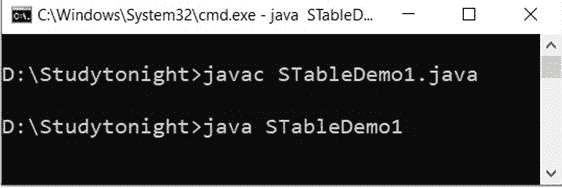 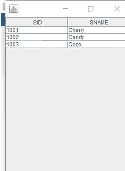
列表框
在 Java 中，Swing 工具包包含一个 JList 类。它在 package javax.swing.JList 类下。它用于一起表示项目列表。可以从列表中选择一个或多个项目。
申报
公共类 JList 扩展了 JComponent，实现了可滚动、可访问
jlist 包含 3 个构造器。它们如下:
1.JList()
2. JList（和[] listData）
3.JList(列表模型
数据模型) 示例:
在这个例子中，我们使用 Jlist 类创建了一个项目列表。该列表用于以列表格式显示项目，并从项目列表中获取用户输入。见下面的例子。
import javax.swing.*; public class SListDemo { SListDemo() { JFrame list_f= new JFrame(); DefaultListModel<String> list_l1 = new DefaultListModel<>(); list_l1.addElement("Red"); list_l1.addElement("Pink"); list_l1.addElement("Blue"); list_l1.addElement("Black"); JList<String> list1 = new JList<>(list_l1); list1.setBounds(100,100, 75,75); list_f.add(list1); list_f.setSize(400,400); list_f.setLayout(null); list_f.setVisible(true); } public static void main(String args[]) { new SListDemo(); } }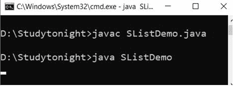 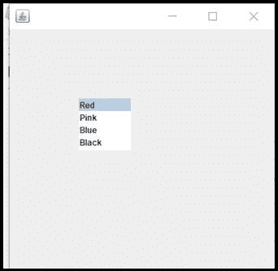